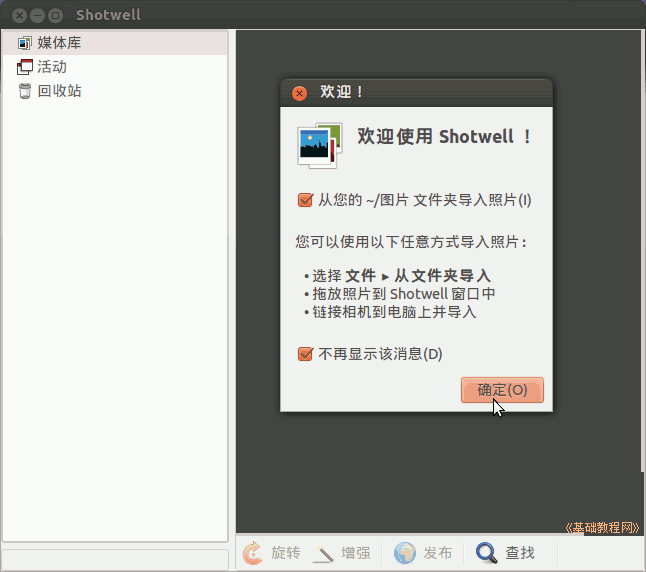
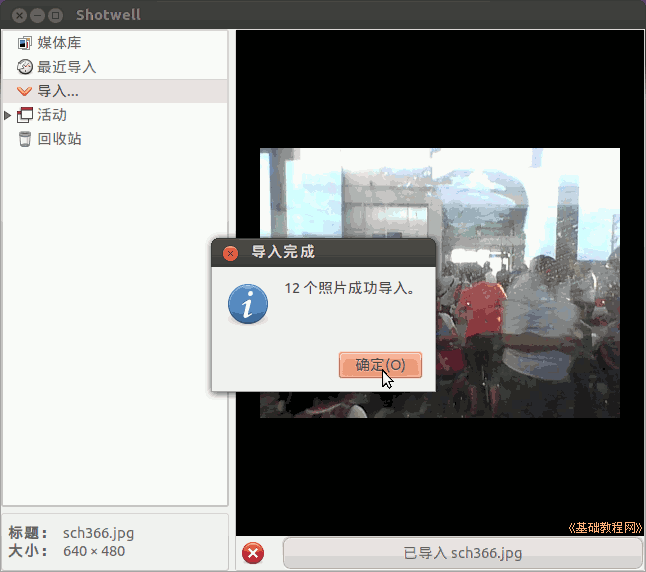
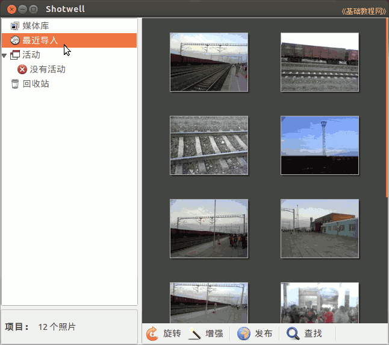
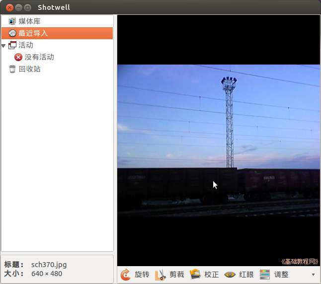
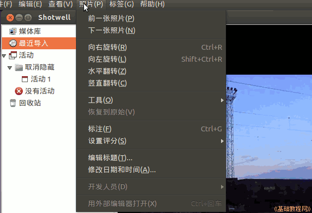
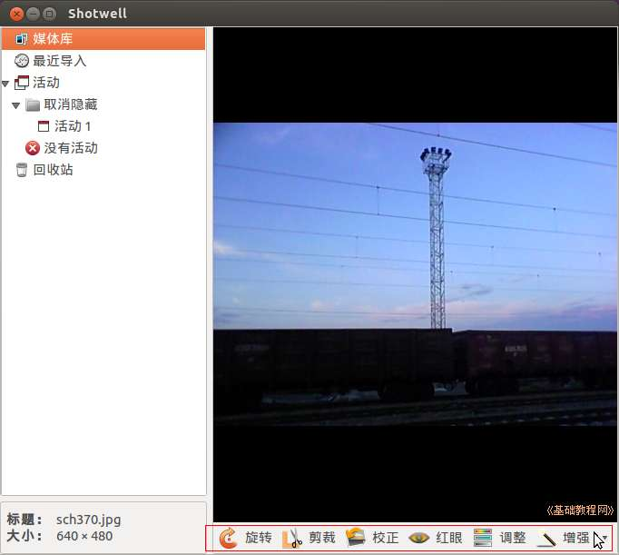

Ubuntu 入门操作指南
作者：TeliuTe 来源：基础教程网
三十六、Shotwell 照片管理器 返回目录 下一课Shotwell 照片管理器可以分类管理照片；
1、Shotwell 照片管理器
1）点击主按钮，在搜索中输入 shotwell ，打开程序，或者依次点“主按钮、所有程序、过滤结果、图形、Shotwell 照片管理器”；

2）首次打开会显示照片导入向导，点“确定”即可导入图片文件夹中的图片，以后点“文件”菜单也可以导入照片

3）点“确定”后显示媒体库中的相片列表，左侧可以选择不同类别；

4）在一个图片上双击可以单个查看图片，再次双击重新回到列表显示方式；

5）选择一张照片，点击顶部的“照片”菜单，还可以对图片进行旋转等编辑操作；

6）打开一张照片后，在下边的任务栏中，还可以进行旋转、剪裁、校正、红眼、调整、增强等操作；

本节学习了Shotwell 照片管理器的基础知识，如果你成功地完成了练习，请继续学习下一课内容；
本教程由86团学校TeliuTe制作|著作权所有
基础教程网：http://teliute.org/
美丽的校园……
转载和引用本站内容，请保留版权信息和本站链接。